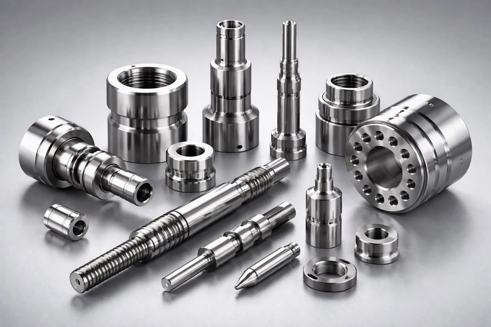

Bubut
Pengerjaan benda kerja berputar untuk poros, bushing, dan komponen silindris.
Dapat dikonfirmasiCV. Mitra Tehnik Indonesia · Metal Engineering
CV. Mitra Tehnik Indonesia menghadirkan solusi pengerjaan teknik dan komponen logam dengan perhatian pada presisi, kualitas material, serta hasil pengerjaan.

Ilustrasi referensi komponen logamTentang perusahaan
Kami mengerjakan komponen logam untuk kebutuhan industri, dari satu unit perbaikan hingga pesanan produksi sesuai gambar teknis.
Keahlian
Kategori awal berikut dapat kami sesuaikan dengan kebutuhan dan layanan resmi perusahaan.
Pengerjaan benda kerja berputar untuk poros, bushing, dan komponen silindris.
Dapat dikonfirmasiPengerjaan presisi dengan mesin CNC sesuai program dan gambar teknis.
Dapat dikonfirmasiPengerjaan permukaan, alur, dan bentuk komponen dengan mesin frais.
Dapat dikonfirmasiPembuatan komponen logam satuan maupun batch sesuai kebutuhan pelanggan.
Dapat dikonfirmasiProduk & komponen
Kategori berikut merupakan contoh dari pekerjaan yang pernah dikerjakan. Daftar produk resmi akan dikonfirmasi perusahaan.


Foto ilustrasi dari sumber referensi, bukan dokumentasi asli perusahaan. Lihat semua kategori →
Mengapa memilih kami
Ringkasan dari ulasan pelanggan di Google Maps (rating 4,5 dari 44 ulasan).
Kualitas & presisi
Setiap pesanan diawali dengan memahami kebutuhan, lalu dikerjakan dan diperiksa sebelum diserahkan.
Portofolio
Beberapa dokumentasi pengerjaan dan suasana workshop. Galeri lengkap tersedia di halaman portofolio.


Mitra yang tercatat
Daftar mitra ditampilkan sebagai teks dan belum memakai logo. Akan diperbarui setelah dikonfirmasi pemilik.